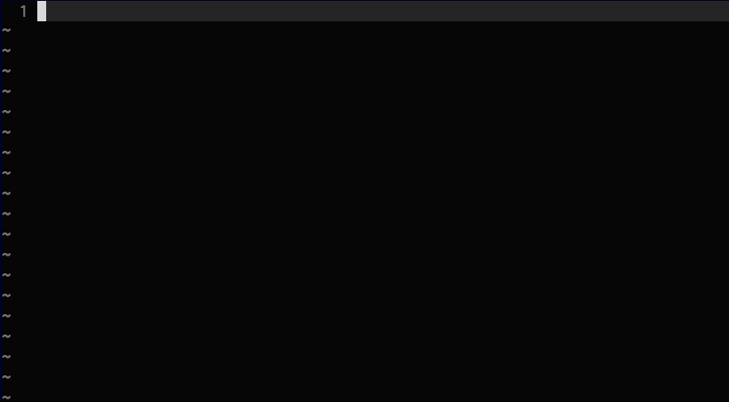
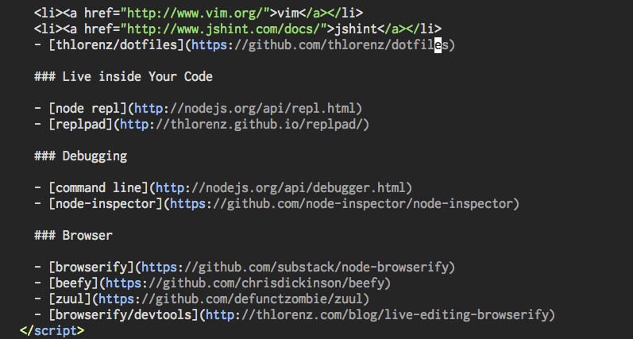
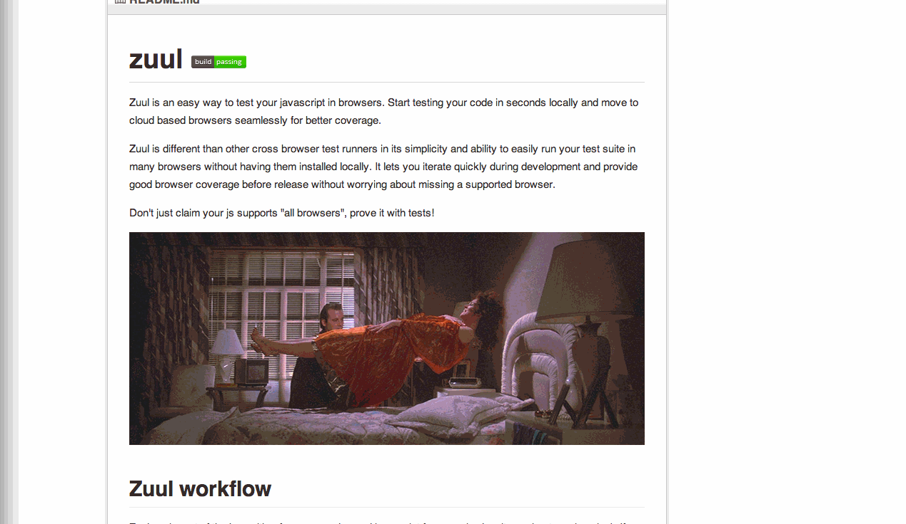

Productivity Up
or what we can learn from musicians

Fast Feedback
Idea
↓
Result
Fast Feedback
Write Code
Inspect
Troubleshooting
Test
Log
Debug
Pimp your Editor
1234

55

999
1000000000002324
Vim


Mac Vim

GVim

The End
Pimp Your Editor!
Snippets
Point out Syntax Errors


Shortcut to Run Code
Macros
Live in your code
DEMO

Log
Debug
Node Debugger

Node Inspector

Test
Zuul
 Live edit browserified code in chrome devtoolsExciting enough?

Tips
Small Modules for quicker inspection